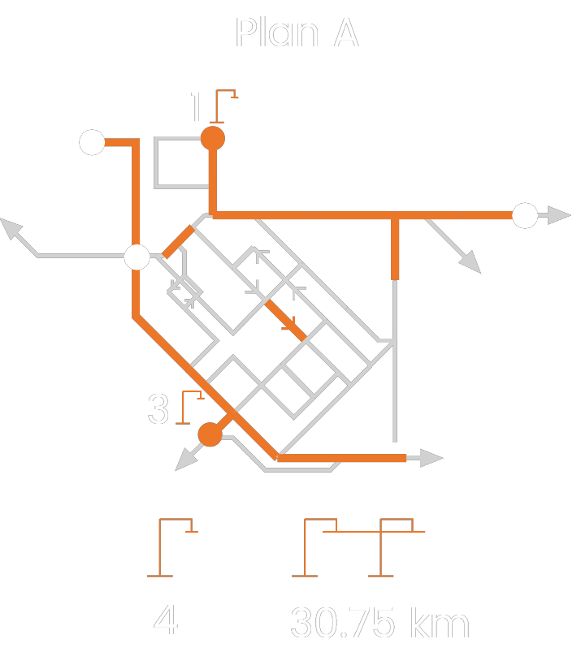
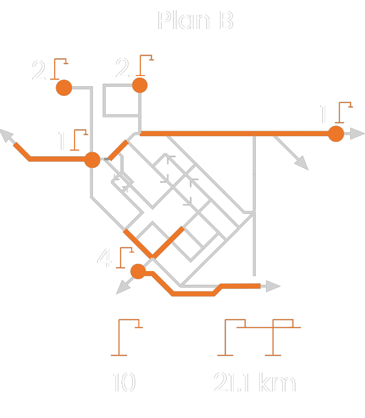

What do we do?
Bus service optimisation and determination of the number and type of e-buses, and charging stations.
Considering the attributes of current bus service (e.g. lines, timetables) and current charging units
(e.g. trolley bus network).
The resilience of e-bus service to seasonal changes is guaranteed by considering stochastic
impacts, such as temperature and travel demand.
Finding the network optimum considering different charging strategies and different bus types.
Charging strategies
- at depot
- daytime at stops
- dynamic en-route
Bus types
- diesel
- hybrid
- plug-in hybrid
- battery electric
- hydrogen fuel-cell
- trolleybus
What do we offer?
Consultancy, network analysis, and modelling to the sponsors of public bus services, such as
municipalities, public transport operators.
Electrification plan covering the bus fleet, charging infrastructure, charging plan, and schedule.
Various scenarios based on optimisation objectives, such as total cost, fleet size and charging power.

